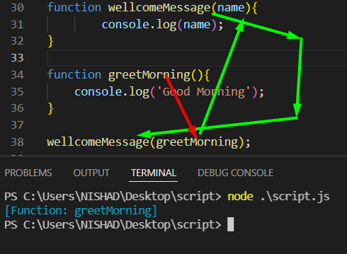
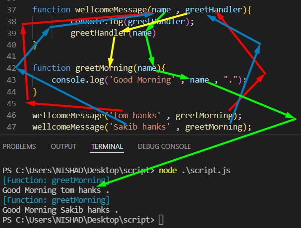
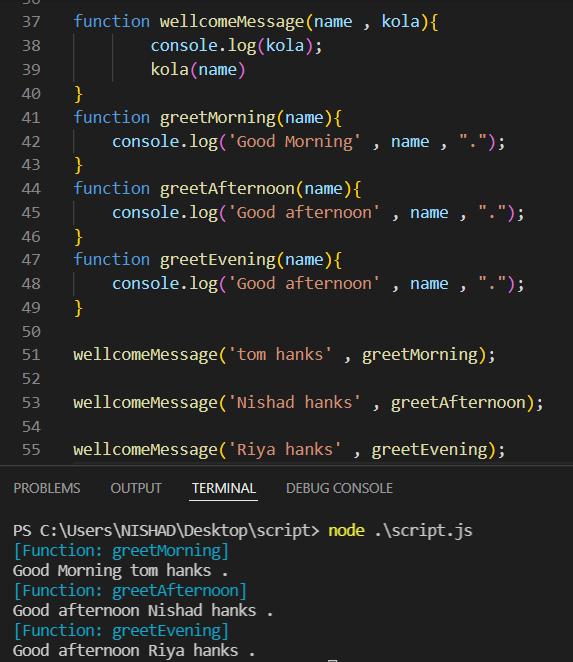
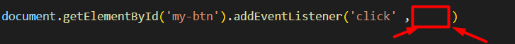
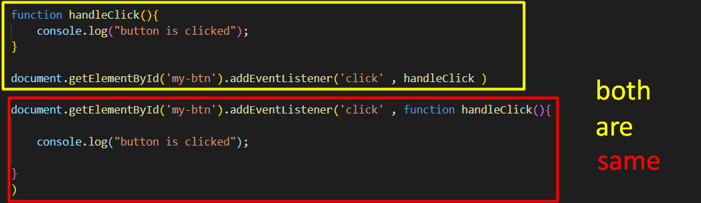

আমরা জানি আমারা চাইলে কোন function এর মধ্যে call করার সময় parameter পাঠাতে পারি ।
parameter হিসাবে string , number , variable , array , object এসব পাঠানো যায় ।
চাইলে parameter হিসাবে কোন function কেও পাঠাতে পারি ।

যেহেতু এখানে parameter হিসাবে একটা function কে পাঠাচ্ছি সেহেতু 42 number লাইনের name ঐ fucntion টাকে পাবে
এখানে name যেহেতু একটা function তাই চাইলে name function কে call করতে পারবো ।
এবং চাইলে function কে call করতে পারি ।
এখানে 40 NL থেকে wellcomeMessage কে call করলাম সেটা parameter হিসাবে পেলাম ,, একটা string এবং fucntion
তো আমার চাইলে function কে call করতে পারি , তাই করেছি nl এ , এবং string কে parameter হিসাবে পাঠাতে পারবো ।

অর্থাৎ একটা function কে যদি অন্য একটা function এর parameter হিসাবে পাঠাই , তাকে বলে callBack function

অর্থাৎ callBack মানে হল কোন function কে call করার সময় যাকে(যে function) পাঠাচ্ছি তাকে যদি সেই fucnction এর ভেতর থেকে call করা হয় তাকে callBack fucntion বলে ।

এই জিনিসটা আমরা অনেকবার ব্যেবহার করছি যেমন
